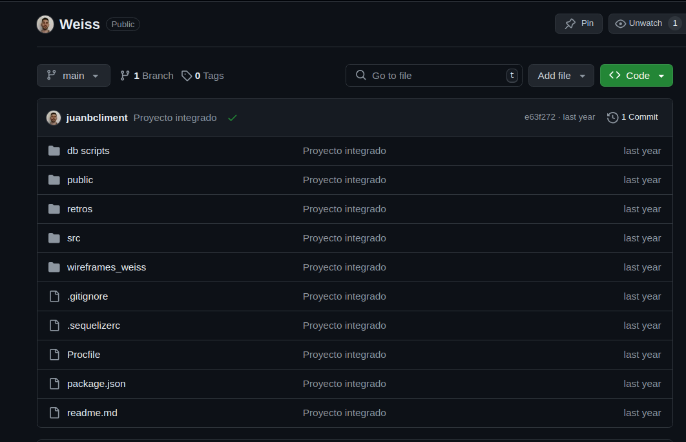
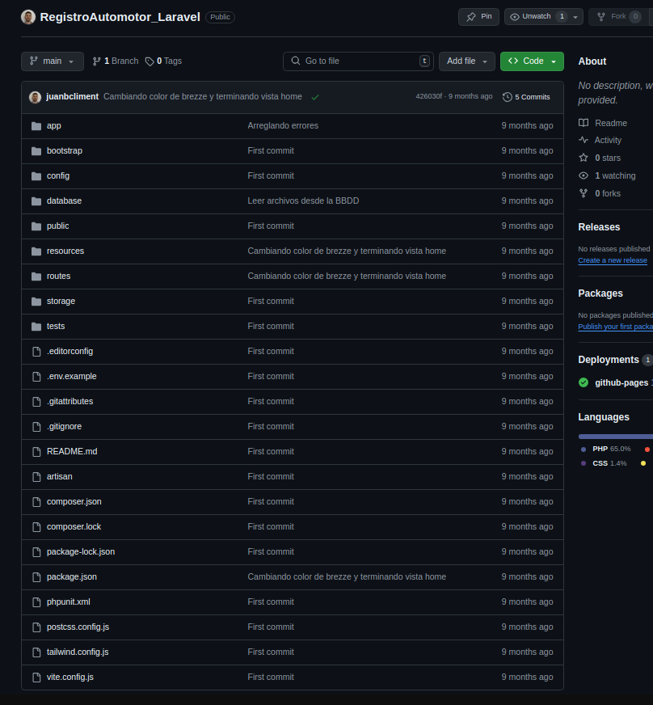
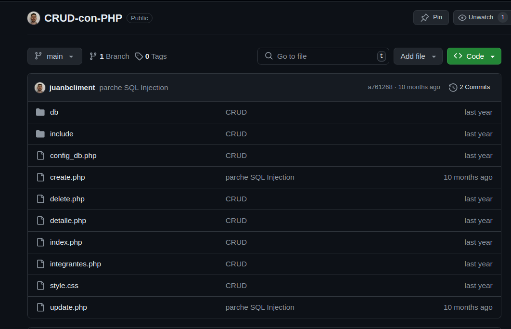

PHP JavaScript SQL
Me apasiona aprender nuevas tecnologías y ampliar mis habilidades de desarrollo web. Actualmente estoy cursando la carrera de ingeniería informática y me estoy especializando en back-end con PHP, Node.js, SQL, phpMyAdmin y Laravel, pero tambien cuento con conocimientos en HTML, CSS, Boostrap, MVC y el manejo de repositorio con Github. Estoy en la búsqueda de una empresa donde me permita, aportar y seguir desarrollándome profesionalmente, tanto en modalidad híbrida como remota.
Juan Bautista Climent
Experiencia
Customer Service Analyst
Thinkion
Diciembre 2023
JSON, SQL, phpMyAdmin
Técnico en Control de calidad
Novatech S.A
Agosto 2016 - Octubre 2016
Controlar instalación del sistema operativo, Comprobación de circuitos electrónicos, Optimizar posibles fallas en fabricación
Pasantía
Gulf Oil Argentina
Junio 2014 - Noviembre 2014
Mantenimiento preventivo, Mantenimiento correctivo, Optimizar procesos productivos
Formación académica
Ingeniería informática
Universidad de Palermo
Agosto 2023 - Actualidad"
Cursando actualmente el primer año de la carrera
PHP Developer
Argentina Programa 4.0
Mayo 2023 - Noviembre 2023 Graduado
Manejo de PHP, Html, CSS, Laravel, SQl y Boostrap, creación de una pagina web, Creación de una base de datos con phpMyAdmin
Desarrollo Web Full Stack
Digital House
Junio 2022 - Diciembre 2022 Graduado
Creación de una página web de cero con Node.js, metodología MVC, phpMyAdmin, HTML, CSS y SQL,manejo de Github y control de versiones
Secundaria
Escuela Técnica Alemana Moreno
Finalizada en Diciembre de 2014
Graduado con título de Técnico Electromecánico
Habilidades Técnicas
- PHP
- Node.js
- Laravel
- Git
- SQL
- HTML
- CSS
- Boostrap
- Linux
- Python
Competencias
- Comunicación
- Organización
- Trabajo en equipo
- Resolución de problemas
- Iniciativa
Cuento con 2 proyectos individuales y 1 grupal
-
Primer proyecto grupal con Digital House, un eCommerce de comida ahumada, todo el backedn se hizo con Node.js, Express y de base de datos phpMyAdmin
- Link al repositorio 
-
Primer proyecto individual, un registro automotor para revisar las multas y los dominios de los vehículos. El sitio Web se hizo con Laravel y phpMyAdmin
- Link al GitHub 
-
Segundo proyecto individual, CRUD con PHP y mysqli utilizando phpMyAdmin
- Link al repositorio 